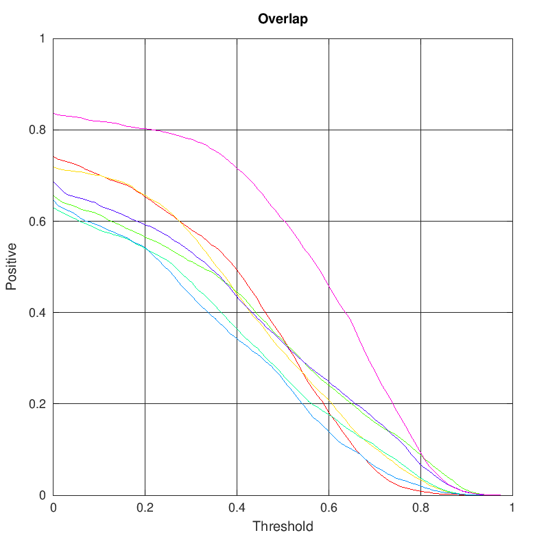

Overlap
Experiment unsupervised
Experiment unsupervised (average)
Overlap overview
| | tag_camera_motion | tag_empty | tag_illum_change | tag_motion_change | tag_occlusion | tag_size_change | tag_all |
|---|
| ADT | 0.3756 | 0.3232 | 0.2496 | 0.3387 | 0.2299 | 0.3475 | 0.3339 |
|---|
| CCOT | 0.4002 | 0.4113 | 0.3618 | 0.3386 | 0.2767 | 0.3532 | 0.3909 |
|---|
| DSiam | 0.3488 | 0.3720 | 0.2507 | 0.3299 | 0.2438 | 0.3416 | 0.3511 |
|---|
| DensSiam | 0.3353 | 0.3145 | 0.3020 | 0.2852 | 0.2117 | 0.2336 | 0.3037 |
|---|
| KCF | 0.2816 | 0.2431 | 0.3202 | 0.2704 | 0.2628 | 0.2774 | 0.2671 |
|---|
| SiamFC | 0.3598 | 0.3489 | 0.3867 | 0.3358 | 0.2385 | 0.3310 | 0.3428 |
|---|
| SiamRPN | 0.5270 | 0.4558 | 0.4653 | 0.4972 | 0.3286 | 0.5027 | 0.4743 |
|---|
Detailed plots
Orderings for overall overlap
Overlap plot for tag tag_camera_motion in experiment unsupervised
Overlap plot for tag tag_empty in experiment unsupervised
Overlap plot for tag tag_illum_change in experiment unsupervised

Overlap plot for tag tag_motion_change in experiment unsupervised
Overlap plot for tag tag_occlusion in experiment unsupervised
Overlap plot for tag tag_size_change in experiment unsupervised